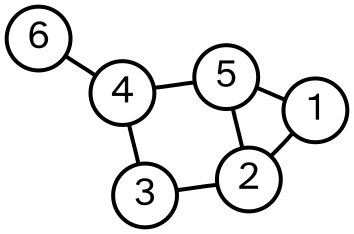
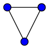
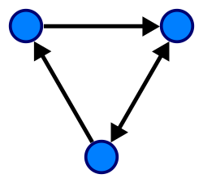
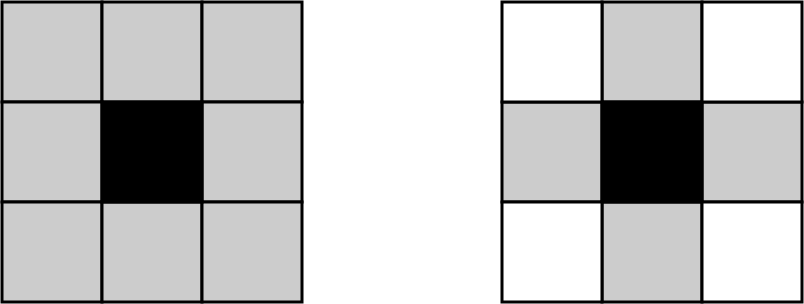
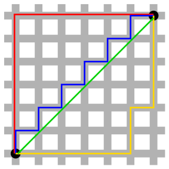
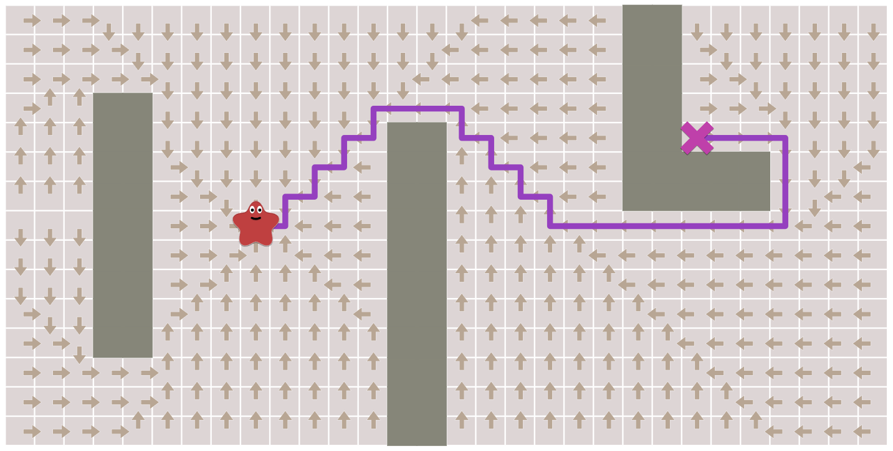
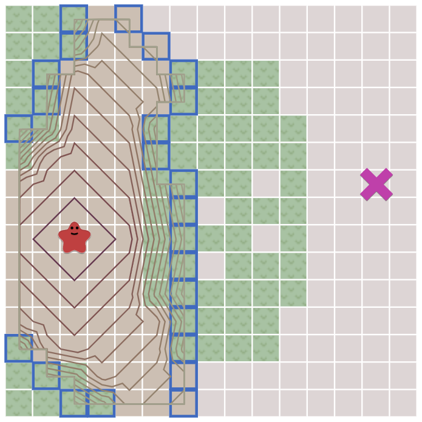
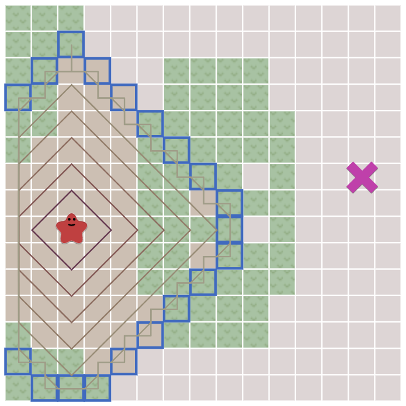
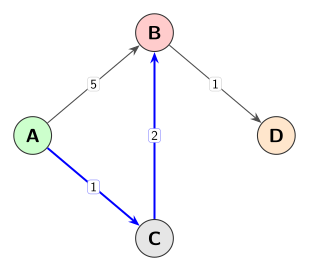

1. SE 423: Introduction to MechatronicsLecture 18: Path planningMarius Juston
Monday, March 30th, 2026
Lecture notes
This is the title slide for SE 423, Introduction to Mechatronics, Lecture 18: Path planning, presented by Marius Juston on Monday, March 30th, 2026. It shows the University of Illinois Urbana-Champaign logo above the course title on a dark blue background sketched with faint math and engineering drawings.
Today you learn how a robot finds its way from a start to a goal on a map. You build up from graphs and map representations to breadth-first search, Dijkstra's algorithm, and A* heuristic search. First, a quick partner review of last lecture.
2. Review – 5-minute partner discussion
Talk to the person next to you and answer these questions.
- Last lecture we said we used “BFS”, what does it stand for? What did we use it for?
- Open on the lecture’s website the path planning visualization that was made for this lecture (https://marius-juston.github.io/SE-423---Class-Material/path_planning.html), play around and draw some things and press the run button. You don’t need to understand what A* Search, BFS, Dijkstra's is yet, but I would recommend having this up during lecture so that you can see the different algorithms.
Lecture notes
This slide is a five-minute review activity with your partner. It has a dark blue title bar reading "Review – 5-minute partner discussion" and two prompts under the instruction "Talk to the person next to you and answer these questions."
The first prompt: last lecture we said we used "BFS". What does it stand for, and what did we use it for? BFS stands for breadth-first search. With your partner, recall where it came up last lecture and what job it did there. The idea to keep in mind is that breadth-first search explores outward from a starting point one layer at a time: first every neighbor one step away, then everything two steps away, and so on. Today that layered exploration becomes the foundation of path planning.
The second prompt asks you to open the path planning visualization made for this lecture, on the course website at https://marius-juston.github.io/SE-423---Class-Material/path_planning.html. Draw some obstacles, press the run button, and watch how the search spreads across the grid. You do not need to understand A* search, BFS or Dijkstra's algorithm yet. Keep the page open during lecture so you can compare the algorithms as we cover each one.
After the discussion, we go through course reminders and then start building path planning from graphs.
3. Reminders
Office Hours:
- Monday: 4-6 PM, Neel
- Tuesday: 11-1 PM, Lakshmi
- Tuesday: 1-3 PM, Samuel
- Tuesday: 2-5 PM, Dan & Marius
Lab: Starting Lab 6 this week. This a 3-week lab!
- Don’t forget to have the Lab LabVIEW application implemented before lab.
Homeworks:
- Check-offs for homework 4 Ex 2 and 3 are due March 31, 5PM (The end of office hours)
- Check-offs for homework 4 Ex 4 are due April 7, 5PM (The end of office hours)
- Remainder of homework 4 due on Gradescope on April 8, 9AM
Lecture notes
This slide lists course reminders in three sections: office hours, lab, and homework.
Office hours are Monday 4 to 6 PM with Neel, Tuesday 11 AM to 1 PM with Lakshmi, Tuesday 1 to 3 PM with Samuel, and Tuesday 2 to 5 PM with Dan and Marius.
Lab 6 starts this week, and it is a three-week lab. Have the LabVIEW application for the lab implemented before you arrive, so your lab time goes to working with the robot.
Homework 4 has three deadlines. On the slide, each mention of homework 4 is a link to the assignment. Check-offs for Exercises 2 and 3 are due March 31 at 5 PM, the end of office hours. Check-offs for Exercise 4 are due April 7 at 5 PM, also the end of office hours. The rest of homework 4 is due on Gradescope on April 8 at 9 AM. Check-offs happen in office hours, so plan to come before those times rather than at the last minute.
Next, there is time for questions about the homework, the lab, or LabVIEW before the lecture moves on to path planning.
4. Questions? (1/2)
Homework, Lab, LabVIEW?
Lecture notes
This slide simply says "Questions?" in large white text on the dark blue Illinois background, with the prompt "Homework, Lab, LabVIEW?" underneath. Faint hand-drawn equations and diagrams in the background are decorative only.
Before starting new material, this is your chance to ask about the reminders just covered. That includes the homework 4 check-offs and the Gradescope submission, Lab 6, which begins this week and runs for three weeks, and the LabVIEW application you need to have implemented before lab.
Next, we move into path planning, building on the BFS idea you reviewed with your partner.
5. Path planning
Lecture notes
This section title slide reads "Path planning" in large dark blue text on an orange background. Faint hand-drawn sketches of equations, a cube, a sphere and diagrams decorate it, with the Illinois logo and the footers "Systems Engineering" and "Grainger Engineering."
With the reminders and questions done, you now start the main topic: how your robot finds a route from start to goal. You build from graphs and map representations to breadth-first search, Dijkstra's algorithm and heuristic search. Next comes a pointer to two interactive tutorials worth exploring.
6. Preface
I would HIGHLY recommend you looking at:
- https://theory.stanford.edu/~amitp/GameProgramming/MapRepresentations.html
- https://www.redblobgames.com/pathfinding/a-star/introduction.html
This is a series of interactable tutorial for path planning, it is very useful and goes through all the material in this lecture!
Lecture notes
This slide, titled Preface, is a strong recommendation before the path planning material begins. It lists two links. The first is Amit Patel's page on map representations for game programming: https://theory.stanford.edu/~amitp/GameProgramming/MapRepresentations.html. The second is the Red Blob Games introduction to A star pathfinding: https://www.redblobgames.com/pathfinding/a-star/introduction.html. The slide describes these as a series of interactive tutorials on path planning that are very useful and cover all of the material in this lecture.
I highly recommend you work through them after class. You can place walls, move the start and goal, and watch breadth-first search, Dijkstra's algorithm and A star expand across a grid step by step. That builds intuition much faster than static slides. Many of the figures and the order of topics in this lecture follow these tutorials, so they also make a good study reference.
We start where those tutorials start: with how a map becomes a graph of nodes and edges.
7. Graphs (1/15)
Lecture notes
This section title slide reads "Graphs" in large navy text on the orange Illinois background, with faint hand-drawn sketches of equations, a cube, a sphere, molecules, and a small diagram of labeled points joined by arrows.
Before you can plan a path, you need a way to describe the world the robot moves through. The Red Blob Games tutorials from the previous slide start the same way. Next, you see how vertices, edges, and weights turn a map into something a search algorithm can work on.
8. Graphs (2/15)
Discrete path planning works on a graph data structure, it can be directed or undirected.
A graph is composed of 2 simple components:
- Edges - E: Paths or transitions between nodes
- Vertices (Nodes) - V: Locations, states, or positions in space
- Weights (Costs) - : Distance, time, energy or terrain difficult to traverse specific edge

Lecture notes
This slide defines the data structure that every discrete path planner in this lecture works on: the graph. A graph can be directed or undirected, and the next slide covers the difference.
The slide says a graph has two simple components, then lists three items. The two core components are vertices and edges. Weights are an optional extra attached to the edges. Vertices, also called nodes, form the set V and represent locations, states, or positions in space. Edges, the set E, are the paths or transitions between nodes. Weights, or costs, are written w(e), read "w of e," meaning the cost of edge e. A cost can be distance, time, energy, or how difficult the terrain is to traverse on that specific edge.
The figure is an example graph with six numbered nodes and seven edges: 6 to 4, 4 to 5, 4 to 3, 5 to 1, 5 to 2, 1 to 2, and 3 to 2. It is undirected and unweighted. Node 6 is a dead end that connects only to node 4. The other five nodes form loops, so there are alternate routes. For example, going from 6 to 1, you can take 6, 4, 5, 1 (three edges) or 6, 4, 3, 2, 1 (four edges). Path planning is about choosing among routes like these.
Quick check: if the edge 4 to 5 had a weight of 10 and every other edge had a weight of 1, which route from 6 to 1 would be cheapest? The answer is 6, 4, 3, 2, 1, with a total cost of 4, compared with 12 for the route through 5. Fewer edges does not always mean lower cost once weights enter the picture.
On your robot, nodes become grid cells or waypoints, and edge weights become the cost of driving between them.
9. Graphs (3/15)
- An undirected (or simple) graph has edges that are bi-directions, you can to and from vertices where nodes are connected

A directed graph has edges that have a direction, you can only go from “a” to “b” and not “b” to “a”

What type would you likely use in robotic applications?
Lecture notes
Building on the vertices, edges and weights from the last slide, this slide compares the two kinds of edges a graph can have.
On the left, an undirected graph: three unlabeled nodes in a triangle, joined by plain lines with no arrowheads. Every edge is bidirectional, so if two nodes are connected you can travel from either one to the other. The slide calls this an undirected or simple graph. In formal graph theory, "simple" more strictly means no self-loops or duplicate edges, but here it just means the edges carry no direction.
On the right, a directed graph: the same triangle, but the edges are arrows. The top-left node points to the top-right node, and the bottom node points to the top-left node, so those are one-way. You can go from "a" to "b" but not back. The edge between the bottom and top-right nodes has arrowheads at both ends, which shows that a directed graph can still represent a two-way connection with a pair of opposite edges.
The slide asks which type you would likely use in robotic applications. Think about it before answering. For a flat floor like the one your robot drives on, moving from cell A to cell B costs about the same as moving back, so an undirected grid graph is common and simple. Directed graphs become necessary when motion is not symmetric. Examples include one-way lanes, ramps where uphill costs more energy than downhill, and vehicles that cannot simply reverse.
Next, we look at how a physical 2D space is turned into one of these graphs as a map.
10. Map Representation
Lecture notes
This is a section divider slide titled "Map Representation," in dark blue text on the orange Illinois background with faint hand-drawn equations and diagrams as decoration.
So far you have seen what a graph is: vertices, edges, weights, and directed versus undirected edges. Now the question is how to turn the robot's physical world into a graph. Next you see why that choice matters: the number of nodes and where they sit determine how fast your planner runs and how good the resulting path is.
11. Graphs (4/15)
Because we live in a Euclidian space, we can often represent the locations that the robot can move to in discrete 2D as a 2D map.
The map representation can make a huge difference in the performance and path quality.
Pathfinding algorithms tend to be worse than linear (time complexity): if you double the distance needed to travel, it takes more than twice as long to find the path.
You can think of pathfinding as searching some area like a circle—when the circle’s diameter doubles, it has four times the area.
Lecture notes
This slide is text only, under the title "Graphs." It makes four points: because we live in a Euclidean space, we can often represent the places a robot can move to, in discrete 2D, as a 2D map. In bold, it stresses that the map representation can make a huge difference in both performance and path quality. It then notes that pathfinding algorithms tend to be worse than linear in time complexity, and closes with an analogy of searching the area of a circle.
Building on the map representation we just introduced, the key idea is that the planner never sees the real world, only the graph you build from it. Each reachable location becomes a node, and each allowed move becomes an edge, so your choice of map decides how many nodes the search must visit.
Time complexity describes how the running time grows as the problem grows. Worse than linear means that if you double the distance the robot must travel, finding the path takes more than twice as long. The circle analogy shows why. A search spreads outward from the start roughly like a growing circle, and the area of a circle is A = pi*d^2/4, pi times the diameter squared over four. Double d and the area becomes four times larger, so the planner may examine about four times as many nodes, not two.
Quick check: if the goal is three times farther away, roughly how much more area might the search cover? (About nine times.) This is why the next slide argues that fewer nodes means faster planning, which matters when your planner runs on the robot in real time.
12. Graphs (5/15)
In general, the fewer nodes in your map representation, the faster the path planning will be.
Also, the more closely your nodes match the positions that units will move to, the better your path quality will be.
The best map representation is defined based on the data that you have, and map visibility.
Lecture notes
This slide has the title "Graphs" and three short statements, with no figures. First, in general, the fewer nodes in your map representation, the faster path planning will be. Second, the more closely your nodes match the positions your units will actually move to, the better your path quality will be. Third, the best map representation depends on the data you have and on map visibility.
The first point follows from the previous slide. Pathfinding is worse than linear: the search spreads out like a growing circle, so doubling the distance roughly quadruples the area searched. Every node you remove from the map is work the planner never has to do.
The second point is the counterweight. If the robot can only travel between nodes, the path can only be as good as those nodes allow. Too few nodes, or nodes in the wrong places, give zig-zag or detoured paths. A "unit" here is a term borrowed from game pathfinding; for us it means the robot.
So there is a tradeoff between speed and path quality, and the right answer depends on your situation. "The data you have" means things like a known floor plan, LiDAR scans or camera images. "Visibility" means how much of the map you can see or know ahead of time, versus discovering it as the robot drives.
A quick question to check yourself: if you halve the size of each map cell, what happens to the node count and to planning time?
Next, we look at the most common representation, the grid map.
13. Graphs (6/15)
A grid map uses a uniform subdivision of the world into small regular shapes sometimes called “tiles”. Common grids in use are square, triangular, and hexagonal.
Grids are simple and easy to understand, and many games and robotic applications use them for world representation.
With grids you usually move between tiles, where the movement costs are uniform.
Lecture notes
This slide is text only, under the heading "Graphs." It introduces the first concrete map representation: the grid map. It makes three points. First, a grid map divides the world uniformly into small, regular shapes, sometimes called tiles, and the common choices are square, triangular, and hexagonal. Second, grids are simple and easy to understand, which is why many games and robotic applications use them to represent the world. Third, on a grid you usually move from tile to tile, and the movement cost between tiles is uniform.
On the last slide you saw that fewer nodes make planning faster, and that nodes matching where the robot actually goes give better paths. A grid is the most direct way to get nodes. Each tile becomes a node in a graph, and each pair of adjacent tiles becomes an edge. Tile size is the tradeoff. Small tiles follow walls and obstacles closely but create many nodes, so search gets slower. Large tiles keep the graph small but can block narrow gaps or produce blocky paths.
The phrase "movement costs are uniform" means every step to a neighboring tile counts the same. That property is what lets the simple breadth-first search, coming up shortly, find shortest paths. Notice the word "usually." Later in the lecture you add movement costs that differ from tile to tile.
On the robot, a grid is a natural fit for a floor map. A LiDAR scan, for example, can mark each square cell as free or occupied.
Next, you see the square, hexagonal, and triangular grids drawn side by side, along with how each tile connects to its neighbors.
14. Graphs (7/15)
![Three grid graphs, each indexed by coordinates (u, v) along basis vectors e sub u (horizontal) and e sub v. Left: a square grid of 4 by 4 nodes labeled (u sub 0, v sub 0) through (u sub 3, v sub 3), with e sub v vertical, so each node links to four neighbors. Center: a hexagonal grid of 3 by 3 cells labeled (u sub 0, v sub 0) through (u sub 2, v sub 2), with e sub v tilted 60 degrees. Right: a triangular lattice of 4 by 4 nodes forming a parallelogram, with e sub v at 60 degrees, so each node connects to up to six neighbors.](L18_files/fbbbf86c48cb.svg)
Lecture notes
This slide has no text beyond the title "Graphs". It shows three side-by-side drawings of the common grid types from the previous slide: square, hexagonal and triangular. Each grid is indexed with a coordinate pair (u, v) and two basis vectors: e_u in blue, pointing horizontally to the right, and e_v in red.
On the left is a square grid of 4 by 4 dots, labeled (u_0, v_0) at the bottom left up to (u_3, v_3) at the top right. Here e_v points straight up, at 90 degrees to e_u. Each node connects to the nodes directly left, right, above and below.
In the center is a hexagonal grid of 3 by 3 hexagon cells, labeled (u_0, v_0) through (u_2, v_2). Here the labels name cells rather than dots. The vector e_v is tilted 60 degrees from e_u, so each row of hexagons is shifted half a cell to the right of the row below. Every hexagon shares an edge with six neighbors.
On the right is a triangular lattice of 4 by 4 dots that forms a slanted parallelogram. Again e_v sits at 60 degrees, and each interior node connects to six neighbors.
The key idea is that all three grids use the same indexing scheme. The world position of index (u, v) is p = u*e_u + v*e_v, and only the angle between the basis vectors changes. That means you can store any of these grids in a plain 2D array.
Notice that the hexagon centers sit exactly on a triangular lattice. Hex cells and triangular nodes are two views of the same layout.
The next slide makes this neighbor structure precise as connectivity. Quick check: in the square grid, how many neighbors does (u_1, v_1) have? With 4-connectivity it has four.
15. Graphs (8/15)
In grid spaces, we have something called connectivity, the most used is 4-connected neighbors and 8-connected components.
Neighbor connectivity informs us which neighbors we could potentially reach at the next time step.
Which is 4-connected neighbors?

4 Valid neighbor
Lecture notes
This slide introduces connectivity in grid maps: the rule for which neighboring cells the robot can move to from its current cell. The text says the two most common choices are 4-connected neighbors and 8-connected neighbors (the slide calls the second "8-connected components"). Connectivity tells you which neighbors you could potentially reach at the next time step. The slide then asks: which picture shows 4-connected neighbors?
Two 3 by 3 grids sit side by side, each with a black center cell for the robot's current cell and gray cells for the cells it can move to. In the left grid, only the four cells directly above, below, left and right of the center are gray. Each is outlined in red, and a red arrow labeled "4 Valid neighbor" points to them. The four corner cells are white. That is 4-connectivity. In the right grid, all eight surrounding cells are gray, including the diagonals. That is 8-connectivity.
The connectivity you choose defines the edges of your graph. Each cell is a node, and each allowed move is an edge. With 4-connectivity a path can only step horizontally and vertically, so routes look like staircases. With 8-connectivity the robot can cut diagonally, which gives shorter, smoother paths. The trade-off is twice as many edges per node. A diagonal step also covers about 1.414 cells, the square root of 2, which matters when we add movement costs later in this lecture.
A common mistake with 8-connectivity is letting the robot move diagonally between two obstacle cells that only touch at a corner. On the real robot, that means clipping a wall.
Next, we look at the problems grids create as you increase their resolution.
16. Graphs (9/15)
What is are some potential problems with grid maps?
Based on the resolution of the grid and the total area of the grid the following happens:
- Requires quadratic amount of memory per resolution increase
- The time it takes to solve the path is based on the resolution and the area
- A lot of the grid is “redundant” information, adjacent neighbors do not advance the robot in a substantial way
However, it is extremely simple to implement! It is just a 2D (or 1D) array!
Lecture notes
This slide is text only. It asks what problems grid maps have, now that you have seen grid types and 4- and 8-connectivity. The slide says that the resolution of the grid and the total area it covers cause three issues. Memory grows quadratically as resolution increases. The time to solve a path depends on both the resolution and the area. Much of the grid is redundant, because stepping to an adjacent cell barely advances the robot. The slide closes on the upside: a grid is extremely simple to implement, because it is just a 2D (or 1D) array.
Here is why memory is quadratic. The number of cells is (width / cell size) * (height / cell size). Take a 4 m by 4 m area. At 10 cm cells it has 40 * 40 = 1,600 cells. At 1 cm cells it has 400 * 400 = 160,000 cells. Shrinking the cell size by a factor of 10 multiplies the memory by 100. Doubling the area also doubles the cell count.
Search time follows the same pattern. Algorithms like breadth-first search, which you see shortly, may visit nearly every cell. An open room therefore costs thousands of tiny steps, each of which moves the robot only one cell width.
The simplicity is real, though. You can store the grid as one flat array and compute index = row * numCols + col. Finding a cell's neighbors is then just adding or subtracting 1 or numCols.
Quick check: if you halve the cell size, how much more memory do you need? The answer is four times as much.
The next slide answers the redundancy problem with polygonal, non-grid representations.
17. Graphs (10/15)
The most common alternative to grids is to use a polygonal representation.
If the movement cost across large areas is uniform, and if your units can move in straight lines instead of following a grid, you may want to use a non-grid representation.
You can use a non-grid graph for pathfinding even if your game uses a grid for other things.
Lecture notes
This slide is text only, with three statements. First, the most common alternative to grids is a polygonal representation. Second, if the movement cost across large areas is uniform, and your units can move in straight lines instead of following a grid, you may want a non-grid representation. Third, you can use a non-grid graph for pathfinding even if your game uses a grid for other things.
This answers the problems from the last slide. A grid spends memory and search time on many cells that barely move the robot forward. In a polygonal representation you describe obstacles as polygons, defined only by their corners, and the open space between them is not stored cell by cell at all.
The two conditions on the slide matter. "Uniform movement cost" means crossing open floor costs the same everywhere, so nothing is lost by skipping the cells in between. "Moving in straight lines" means the robot is not limited to 4-connected or 8-connected steps. Our robot meets both conditions: it can drive a straight segment between two waypoints. The words "units" and "game" come from game pathfinding, where these ideas are widely used. For you, read them as "robot" and "robot software."
A common confusion is to think you must pick one representation. You can keep an occupancy grid for mapping, for example from LiDAR, and still build a much smaller graph just for planning.
Next you see which points become the nodes of that graph: the obstacle corners.
18. Graphs (11/15)
The shortest path will be between corners of the obstacles.
So, we choose those corners as the key “navigation points” points; these can be computed once per map change.
If your obstacles are aligned on a grid, the navigation points will be aligned with the vertices of the grid.
In addition, the start and end points for pathfinding need to be in the graph; these are added once per navigation task.
Lecture notes
This slide has only text, under the title "Graphs." It makes four points. First, the shortest path between two points will run between corners of the obstacles. Second, we therefore choose those corners as the key "navigation points," and they only need to be computed once per map change. Third, if your obstacles are aligned on a grid, the navigation points line up with the vertices of the grid. Fourth, the start and end points must also be in the graph, and these are added once per navigation task.
Here is why the corners matter. Picture stretching a string tight from start to goal around the obstacles. Wherever the string bends, it bends at an obstacle corner. Between bends it runs in a straight line. So you never need to consider points in the middle of open space. The corners alone are enough to describe any shortest path, and that is why the polygonal representation from the last slide shrinks the search space so much compared with a grid.
Notice the split in how often each piece is computed. The corners depend only on the map, so you compute them once and reuse them for every trip. The start and goal change with each task, so you add only those two nodes each time.
A common mistake is to use the exact obstacle corners. Your robot has a physical size, so you should push each corner outward by at least the robot's radius, or the path will clip the obstacle.
Next, we decide which navigation points are connected to each other, and the figure on the following slide shows the resulting graph.
19. Graphs (12/15)

Lecture notes
This slide is a picture of the idea from the previous slide: build a graph from the corners of the obstacles plus the start and end points. Two shaded obstacles sit in the workspace, a triangle on the left and a larger polygon on the right. Every obstacle corner is a red node. The start is a green node on the far left and the end is a green node on the lower right. Thin gray lines join pairs of nodes that can see each other, meaning the straight segment between them does not pass through an obstacle. Obstacle edges count as edges too, because the robot can slide along a boundary.
A thick orange line marks the shortest path. It runs from the start up to the triangle's top corner, follows the triangle's upper-right edge down to its right corner, and continues to the polygon's left corner. From there it follows the polygon's lower-left edge to its bottom corner, then goes straight across to the end.
Notice that the path bends only at obstacle corners. That is why the corners are the right choice for navigation points. Pulling a string tight between start and end would trace the same path. A grid of this map would have thousands of cells, but here the search only has a dozen nodes.
A common mistake is forgetting that a real robot has width. In practice you grow, or inflate, each obstacle by the robot's radius before you pick the corners. Otherwise the path scrapes the obstacles.
Next, we formalize how these connections are found and how each edge gets a cost.
20. Graphs (13/15)
In addition to the navigation points, we need to know which points are connected.
The simple algorithm is to build a visibility graph: pairs of points that can be seen from each other without colliding with the obstacles.
However, this representation increase time complexity but potentially greatly reduces the search space.
The third piece of information we needs is travel times between the points. That will be Manhattan distance or diagonal grid distance if your units move on a grid, or straight-line distance if they can move directly between the navigation points.
Lecture notes
This slide has text only, no figure. It lists the remaining pieces you need to turn a map into a graph for path planning. The first piece, from the last two slides, is the navigation points: the obstacle corners plus the start and end. The second is which points are connected. The third is the cost of traveling between connected points.
For connections, the simple approach is a visibility graph. Two navigation points are joined by an edge if the straight segment between them does not collide with any obstacle. That is exactly what the thin lines in the previous figure showed. The shortest path from start to end always lies along these edges.
There is a trade-off. Building the visibility graph adds computation, because every pair of points must be checked against every obstacle edge. If you have n points, that is roughly n^2 pairs, each tested against the obstacles. In return, the search space can shrink dramatically. Instead of searching thousands of grid cells, the planner searches only a few dozen corners. Because the corners change only when the map changes, you often pay this cost once.
The third piece is the travel time, or cost, on each edge. Which measure you use depends on how the robot moves. Use Manhattan distance or diagonal grid distance if motion is restricted to a grid. Use straight-line distance if the robot can drive directly between points.
A common mistake is choosing a cost that does not match how the robot actually moves. The next slide makes this concrete with a city-block example comparing these distance metrics.
21. Graphs (14/15)
Because we work on rectangular grids, we can define different distance metrics.

We are traveling on this grid, order which is the shortest path distance-wise?
Which gives the closest travel distance when traveling on the grid?
The green is the shortest (), all the others are the same distance (12)
The red, blue and yellow, since we cannot move diagonally
Lecture notes
This slide is titled Graphs, and its point is that because we plan on rectangular grids, we can define different distance metrics. Last slide we said a graph needs travel costs between points; now we look at how to measure them.
The figure is a six by six grid of city blocks, drawn as gray streets around white squares. A start point sits at the bottom-left corner and a goal at the top-right corner, with four routes between them. Red goes straight up 6 blocks, then right 6. Blue climbs a staircase of alternating one-block steps, right and up. Yellow goes right 5, up 2, right 1, then up 4. Green cuts straight across diagonally from corner to corner.
The slide asks two questions. First, rank the paths by distance. The red answer text says green is shortest, at 6 times the square root of 2, written 6*sqrt(2), or about 8.5 blocks. Red, blue and yellow all tie at 12 blocks. However they wiggle, each one moves 6 blocks right and 6 blocks up in total.
Second, which path gives the true travel distance if you must stay on the streets? The answer is red, blue and yellow, because you cannot move diagonally through the buildings. The green line is only a lower bound you can never actually drive.
A common mistake is to assume the staircase is shorter because it "looks" closer to the diagonal. It is not. On a four-connected grid, every path that never moves backward costs the same.
Next slide, we name these two ideas: Euclidean distance and Manhattan, or taxicab, distance.
22. Graphs (15/15)
The most common distance metrics in path planning are Euclidian:
Or Manhattan (also known as Taxicab):
To have the most representative path planner you need to ensure the correct distance metric for your grid / task.
Lecture notes
This slide puts formulas to the two distances from the city-block example you just worked through. It has two equations and a closing statement.
The first is the Euclidean distance, the straight-line distance: d(p,q) = ||p - q||_2 = sqrt( sum from i = 1 to n of (p_i - q_i)^2 ). In words, the distance between points p and q is the 2-norm of their difference: subtract each coordinate, square the differences, add them up over all n dimensions, and take the square root. In 2D this is just the Pythagorean theorem.
The second is the Manhattan, or taxicab, distance: d(p,q) = ||p - q||_1 = sum from i = 1 to n of |p_i - q_i|. This is the 1-norm: add up the absolute coordinate differences, as if you can only travel along the streets of a grid.
Check these against the previous slide. From one corner of the 6 by 6 grid to the other, the Euclidean distance is sqrt(6^2 + 6^2) = 6*sqrt(2), about 8.5 blocks, which is the green diagonal. The Manhattan distance is |6| + |6| = 12, the length of the red, blue and yellow routes.
The slide's last point is that your planner is only as representative as the metric you choose. If your robot can only move in four directions on the grid, Manhattan matches the real travel cost. If it can drive directly between points, Euclidean does. Picking the wrong one makes the planner rank paths in ways the robot cannot actually achieve.
Quick check: on a grid that allows diagonal moves, does Manhattan overestimate or underestimate the true travel distance? It overestimates, and this question will matter again when we reach heuristic search.
Next, we use these distances as edge costs to find the shortest path, and then the lowest-cost path.
23. Path Planning (1/2)
Lecture notes
This is a section title slide reading "Path Planning" in dark blue text on the orange Grainger Engineering background, decorated with faint hand-drawn equations and diagrams.
You now have the tools to represent the environment: a map as a graph or grid, plus a distance metric, either Euclidean or Manhattan. This section uses that graph to search for a route from start to goal. We first ask what "shortest" should really mean, then build up from breadth-first search toward lowest-cost search.
24. Path Planning (2/2)
Once we have a graph representation of the environment, we now want to find the “shortest” path!
The shortest path is not necessarily what we always want. In what real-world situation would not want to take the shortest path?
- Go up climb up a mountain to go to the other side of it instead of just going around it.
- Driving in mud or water vs dry road for safety.
What we actually want is the lowest-cost path!
Lecture notes
This slide is titled Path Planning and contains only text. It says that once we have a graph representation of the environment, we want to find the "shortest" path, with shortest in quotation marks. It then notes that the shortest path is not always what we want and asks: in what real-world situation would you not want to take the shortest path? Two bulleted answers follow. First, climbing over a mountain to reach the other side instead of going around it. Second, driving through mud or water instead of on a dry road, for safety. The slide ends in bold: what we actually want is the lowest-cost path.
Before reading the bullets, take a moment to think of your own example. The point is that distance is only one way to measure how good a path is. In a graph, you can attach a number called a cost, or weight, to each edge. That cost can include distance, but also energy, time, risk, or wear on the robot.
The mountain route may be shorter on a map but cost far more effort and time. The muddy road may be shorter but risks getting stuck. Path cost is the sum of the edge costs along the path, written cost(path) = sum of c(edge) over every edge in the path. The planner's job is to minimize that sum.
For our robot, you could raise the cost of grid cells near walls so the planned path keeps clearance from obstacles, even if it is slightly longer.
Next we start with the simplest search, breadth-first search, which ignores costs. Later in the lecture we add movement cost with Dijkstra's algorithm.
25. Path Planning - BFS (1/6)
The key idea for all of these algorithms is that we keep track of an expanding ring called the frontier.
On a grid, this process is sometimes called “flood fill”, but the same technique also works for non-grids.
The simplest path planning algorithm that uses this is BFS (Breadth First Search),
Lecture notes
This slide is text only, under the title "Path Planning - BFS." It makes three points. First, the key idea behind all of the search algorithms in this lecture is that you keep track of an expanding ring called the frontier; the word frontier is in bold. Second, on a grid this process is sometimes called "flood fill," but the same technique also works on graphs that are not grids. Third, the simplest path planning algorithm built on this idea is BFS, which stands for Breadth First Search.
On the last slide we said the goal is the lowest-cost path, not just the shortest. Before we add costs, we need the basic search engine that every planner shares. The frontier is the set of nodes you have discovered but not yet expanded. At each step you take a node off the frontier, look at its neighbors, and add any unvisited neighbors to the frontier. The frontier therefore spreads outward from the start like water poured on the floor, which is where the name flood fill comes from.
BFS expands the frontier strictly in order of discovery: all nodes one step away, then all nodes two steps away, and so on. Because the grid map you built for the robot is just a graph, the same procedure works whether the nodes are grid cells or arbitrary waypoints. Dijkstra's algorithm and A*, which come later, change only the order in which frontier nodes are taken out.
Quick check: on a 4-connected grid with no obstacles, what shape does the BFS frontier make? It makes a diamond.
Next, you see how few lines of code BFS actually takes.
26. Path Planning - BFS (2/6)
It is incredibly simple to implement BFS, only 10 lines of code!
frontier = Queue()
frontier.put(start )
reached = set()
reached.add(start)
while not frontier.empty():
current = frontier.get()
for next in graph.neighbors(current):
if next not in reached:
frontier.put(next)
reached.add(next)
Lecture notes
This slide shows the whole breadth first search algorithm as ten lines of Python-style code, under the headline "It is incredibly simple to implement BFS, only 10 lines of code!" The code uses color coding: frontier in blue, reached in brown, start in red, and next in green.
The first four lines set things up. You create the frontier as a first-in, first-out Queue and put the start node in it. You also create an empty set called reached and add start to it.
Then comes the main loop: while the frontier is not empty, take the oldest node out with frontier.get() and call it current. For each next node in graph.neighbors(current), check whether next is already in reached. If it is not, put next on the frontier and add it to reached.
That is the expanding ring from the previous slide. Because the queue is first-in, first-out, you finish every node one step from start before any node two steps away, so the frontier grows outward evenly, like a flood fill.
Two details matter. First, you mark a node as reached when you add it to the queue, not when you remove it. This keeps the same grid cell from being queued many times. Second, if you swap the Queue for a stack, which is last-in, first-out, you get depth first search instead. Depth first search does not expand in rings.
To check your understanding, ask yourself what this loop gives you once it finishes. The answer is every node reachable from start, but not a path. The next slide fixes that.
27. Path Planning - BFS (3/6)
But how do we find the shortest path?
The loop doesn’t actually construct the paths; it only tells us how to visit everything on the map.
That’s because Breadth First Search can be used for a lot more than just finding paths; for example, in the previous lecture it was used for connected component finding for “blob” search.
Here though we want to use it for finding paths, so let’s modify the loop to keep track of where we came from for every location that’s been reached, and rename the reached set to a came_from table (the keys of the table are the reached set)
Lecture notes
This slide is text only, with no figures. It asks: but how do we find the shortest path? It points out that the BFS loop from the previous slide does not construct any paths. It only tells us how to visit everything on the map. The slide explains that this is deliberate, because breadth first search is useful for much more than path finding. In the previous lecture, for example, it was used for connected component finding in "blob" search. Since we now want paths, the slide proposes keeping track of where we came from for every reached location, and renaming the reached set to a came_from table, whose keys are the reached set.
Look back at the 10-line loop. The reached set only answers yes or no: have I seen this cell? That is exactly what blob labeling needs, but it throws away how you got there. The fix is small. When the loop first discovers a neighbor "next" while expanding "current", it records came_from[next] = current. A dictionary keyed by location does both jobs at once. "next in came_from" replaces "next in reached", and the stored value is the parent cell.
Why does this give the shortest path? BFS expands the frontier in rings of equal step count. The first time a cell is reached is therefore through a fewest-steps route, and we never overwrite it afterward. Note that this is shortest in number of moves, which assumes every move costs the same. Movement costs come later in the lecture.
Quick check: what value should came_from[start] hold? The next slide shows the modified code, and the start gets None.
28. Path Planning - BFS (4/6)
frontier = Queue()
frontier.put(start )
came_from = dict() # path A->B is stored as came_from[B] == A
came_from[start] = None
while not frontier.empty():
current = frontier.get()
for next in graph.neighbors(current):
if next not in came_from:
frontier.put(next)
came_from[next] = current
Lecture notes
This slide shows the modified BFS loop as Python-style code. It creates a queue called frontier and puts the start node in it. Then it creates a dictionary called came_from, with the comment "path A to B is stored as came_from[B] == A", and sets came_from[start] = None. The main loop runs while the frontier is not empty. It takes current off the front of the queue, then loops over each next in graph.neighbors(current). If next is not yet in came_from, it puts next on the frontier and records came_from[next] = current.
Compare this with the previous slide. Only two things change. The reached set becomes the came_from dictionary, and reached.add(next) becomes came_from[next] = current. The keys of came_from are exactly the reached set, so the membership test "next not in came_from" still keeps you from visiting a cell twice. Each value now remembers which neighbor you stepped from. The start gets None because nothing comes before it, and that None marks the end of the trail.
Notice that the arrow points backward. came_from[B] == A means you reached B from A, not that B leads to A in the search order. Students often mix this up when they reconstruct the path.
A common bug is to record came_from when a node is popped instead of when it is pushed. Doing that lets the same cell enter the queue several times, and you can overwrite good parents with worse ones.
Quick check: on a grid with 4-connected neighbors, how many entries does came_from hold when the loop ends? The answer is one entry per reachable open cell.
Next, you see what these stored pointers look like on a map.
29. Path Planning - BFS (5/6)
Now came_from for each location points to the place where we came from.
They form a “flow field” and act like “breadcrumbs”.
They’re enough to reconstruct the entire path!

Lecture notes
This slide shows what the came_from table from the previous slide's code looks like on a map. The text says that came_from for each location now points to the place we came from. Together these pointers form a "flow field" and act like "breadcrumbs," and they are enough to reconstruct the entire path.
The figure is a grid map. Three gray walls block it: a tall vertical wall on the left, a long vertical wall in the middle, and an L-shaped wall at the upper right. The start is a red star-shaped character at left center. Every open cell holds a small arrow pointing to the neighbor it was reached from, so wherever you begin, following the arrows leads back to the start. The goal is a purple X tucked inside the notch of the L. A purple path runs from the start to the goal. It climbs in stair steps up and over the top of the middle wall, steps back down, runs right beneath the L, wraps up around its right end, and turns left into the goal.
The key idea is that BFS stores only one pointer per cell, yet that covers the shortest path to every reachable cell, not just one.
A common mistake is to read the arrows as pointing toward the goal. They point back toward the start, so you walk them backward from the goal, and the path comes out in reverse order. That is exactly what the reconstruction code on the next slide handles.
Quick question: why does the path look like stairs? On a four-connected grid, many paths share the same step count. The neighbor order decides which one BFS records.
30. Path Planning - BFS (6/6)
To reconstruct paths: follow the arrows backwards from the goal to the start. A path is a sequence of edges, but often it’s easier to store the nodes:
current = goal
path = []
while current != start:
path.append(current)
current = came_from[current]
path.append(start) # optional
path.reverse() # optional
That’s the simplest pathfinding algorithm. It works not only on grids as shown here but on any sort of graph structure
Lecture notes
This slide shows how to turn the came_from breadcrumbs from the last slide into an actual path. The text says to follow the arrows backwards, from the goal to the start. A path is technically a sequence of edges, but it is usually easier to store the sequence of nodes.
The code, read line by line: set current equal to goal. Set path to an empty list. While current is not equal to start, append current to path, then set current to came_from[current], which steps one arrow back toward the start. After the loop, append start to path; the comment marks this as optional. Finally, call path.reverse(), also marked optional.
Why the reverse? The arrows point backward, so the list is built goal-first. Reversing it gives start-to-goal order, which is what you hand to a trajectory follower. Whether you include the start node depends on your application. On the robot, you often drop it because the robot is already there.
A common mistake is reconstructing a path to a goal that BFS never reached. Then goal is not a key in came_from, and the lookup fails. Check for "goal in came_from" first. Also note the loop stops at start because came_from[start] = None.
The slide ends by noting this is the simplest pathfinding algorithm, and it works on any graph, not just grids. Next, you see that BFS explores far more than you need, which motivates early exit.
31. Path Planning – Early Exit
We’ve found paths from one location to all other locations. Often, we don’t need all the paths; we only need a path from one location to one other location.
We can stop expanding the frontier as soon as we’ve found our goal!
Early exit does not necessarily need to be based on when you reach your goal what are other early termination criteria's?
- Distance limit
- Number of goals reached
- Area limit (number of tiles reached)
Lecture notes
This slide has text only, no figure. It makes three points. First, the breadth first search so far finds paths from one start location to all other locations, but often you only need a path from one location to one other location. Second, you can stop expanding the frontier as soon as you find your goal. Third, it asks: early exit does not have to be based on reaching the goal, so what other termination criteria are there? It lists three: a distance limit, a number of goals reached, and an area limit, meaning a number of tiles reached.
On the last slide you rebuilt a path by following came_from backward from the goal. That walk only needs the came_from entries between the start and the goal. Everything BFS explores after it reaches the goal is wasted work. In code, you add one test inside the main loop: after you take current from the frontier, if current == goal, break. Because every BFS step costs the same, the first time you reach the goal is already along a shortest path.
The other criteria limit how much work the search does:
A distance limit stops once the frontier is farther from the start than some maximum, for example the robot's useful range.
A goal count stops after k targets are found, which helps when several destinations are acceptable.
An area limit caps the number of tiles explored, which bounds computation time on the robot.
Quick check: does the early exit still give a correct shortest path once moves have different costs? Keep that question in mind, because the next slides add movement costs and Dijkstra's algorithm.
32. Path Planning – Movement Cost (1/17)
So far, we’ve made steps have the same “cost”.
In some pathfinding scenarios there are different costs for different types of movement.
One example is diagonal movement on a grid that costs more than axial movement (1 vs ).
We’d like the pathfinder to take these costs into account.
Lecture notes
This slide is text only, under the title "Path Planning – Movement Cost." It makes four points. So far, every step has had the same cost. In some pathfinding problems, different kinds of movement have different costs. One example is a grid where a diagonal step costs more than an axial step: 1 versus the square root of 2, written 1 vs sqrt(2). And we want the pathfinder to take these costs into account.
Until now, breadth-first search has treated every edge as equal. It expands the frontier one ring at a time, so the first path it finds to a tile has the fewest steps. That is the shortest path only when every step costs the same. The cost of a move is a number attached to an edge of the graph, also called its weight.
The square root of 2 comes from geometry. If grid cells are one unit wide, moving left, right, up, or down covers a distance of 1. Moving diagonally covers the hypotenuse of a 1 by 1 triangle, which is sqrt(1^2 + 1^2) = sqrt(2), about 1.414.
Costs do not have to be distances. They can also stand for terrain that is harder to cross, energy use, or how close a cell is to an obstacle.
A common mistake is to allow diagonal moves but keep using BFS. BFS then counts a diagonal as cheap as a straight step, so it can return paths that look shortest by step count but are longer in real distance. For the robot, which actually drives those distances, the costs need to be part of the search.
Quick check: on an 8-connected grid, how much does it cost to go two cells right and two cells up using only diagonal moves, compared with only axial moves? The answers are 2*sqrt(2), about 2.83, versus 4.
Next, Dijkstra's algorithm is the fix: it changes BFS so that it accounts for these costs.
33. Path Planning – Dijkstra’s Algorithm
For this we want Dijkstra’s Algorithm (or Uniform Cost Search).
How does it differ from Breadth First Search?
We need to track movement costs, so let’s add a new variable, cost_so_far. This stores the total movement cost from the start location, also called a “distance field”.
We want to take the movement costs into account when deciding how to evaluate locations; let’s turn our queue into a priority queue.
A priority queue (min priority queue), is like a queue but instead of first-in-first-out, you get lowest-cost-out! This changes how the frontier expands!
Lecture notes
This slide is all text, with no figures. It introduces Dijkstra's Algorithm, also called Uniform Cost Search, as the answer to the problem from the previous slide: steps on the grid no longer all cost the same, for example a diagonal step costing about 1.414 (the square root of 2) instead of 1. The slide asks how Dijkstra differs from Breadth First Search and gives two changes, with the key terms cost_so_far, distance field, priority queue, queue and frontier in bold.
The first change is a new variable, cost_so_far. For every location you have reached, it stores the total movement cost of the best path found so far from the start. Taken over the whole map, these values form a "distance field": a map of how expensive it is to get anywhere from the start. It sits alongside the came_from table you already keep in BFS.
The second change is the data structure for the frontier. BFS uses an ordinary queue, which is first-in-first-out, so it expands locations in order of number of steps. Dijkstra uses a min priority queue, which is lowest-cost-out: the next location you remove is always the one with the smallest cost_so_far. That one change makes the frontier grow by accumulated cost instead of by step count.
A common mistake is to keep the plain queue and only add the cost bookkeeping. You then get correct-looking numbers but the wrong expansion order, and paths that are not cheapest.
Quick check: if every step costs 1, how does Dijkstra behave compared to BFS? (It expands in the same order and finds equally short paths.) Next, you see what this does to the frontier on a map with costly forest tiles.
34. Path Planning – Movement Cost (2/17)


Dijkstra’s Algorithm
Breadth First Search
Lecture notes
This slide shows the effect of movement cost visually, with two grid maps side by side. Both have the same layout: a start tile marked with a red star on the left, a goal marked with a purple X on the right, and a cluster of green forest tiles between them. Forest tiles cost more to enter than the plain light tiles. Each map shows the explored region shaded, contour lines of equal cost from the start, and the current frontier outlined in blue. Neither search has reached the goal yet.
On the left, labeled Dijkstra's Algorithm, the contours start as diamonds around the star. Toward the forest they stretch vertically and bunch tightly together, because every forest step adds a large cost. The frontier stops at the forest's left edge and wraps around its top and bottom. Dijkstra explores cheap terrain first and goes around the expensive region rather than through it.
On the right, labeled Breadth First Search, the contours stay as evenly spaced diamonds. BFS counts steps, not cost, so its frontier is a clean diamond that pushes straight into the forest as though it were plain ground.
This is the payoff of the priority queue from the previous slide. Dijkstra always expands the lowest cost_so_far first, so its frontier follows equal cost rather than equal step count. In the lab, the same idea lets your robot's planner prefer open floor over cells near obstacles.
To check your understanding: if every tile had the same cost, what would the left map look like? It would look identical to BFS.
Next, we see one subtlety this creates: a node can be reached more than once at different costs.
35. Path Planning – Movement Cost (3/17)
Less obviously, we may end up visiting a location multiple times, with different costs, so we need to alter the logic a little bit.
This is because you can have 2 paths to reach one node with the same unit distance but different costs.
Instead of adding a location to the frontier if the location has never been reached, we’ll add it if the new path to the location is better than the best previous path.

Lecture notes
This slide covers a subtler consequence of adding movement costs: the same location can be reached more than once, at different costs, so the rule for adding locations to the frontier has to change.
The text says you can have two paths to one node that look equally good by step count but have different costs. The figure is a small weighted directed graph with four nodes. Node A (the start, in green) has an arrow to B with cost 5 and an arrow to C with cost 1. C has an arrow up to B with cost 2, and B has an arrow to D with cost 1. The path A to C to B is highlighted in blue.
Trace it with the priority queue from the previous slide. Start at A with cost 0. Expanding A gives B a cost of 5 and C a cost of 1, and both go into the frontier. The lowest-cost-out rule pops C first. From C, the new cost to B is 1 + 2 = 3, which beats the 5 already recorded. So you overwrite cost_so_far[B] = 3, set came_from[B] = C, and push B again with priority 3. Then B is expanded, and D gets cost 3 + 1 = 4.
The common mistake is keeping the breadth-first rule "add only if never reached." With that rule, B stays stuck at cost 5 coming from A, and D ends up at 6 instead of 4.
So the new rule is to add a location if it has never been reached, or if the new path is cheaper than the best previous path. The next slide shows exactly this check in code.
36. Path Planning – Movement Cost (4/17)
frontier = PriorityQueue()
frontier.put(start, 0)
came_from = dict()
cost_so_far = dict()
came_from[start] = None
cost_so_far[start] = 0
while not frontier.empty():
current = frontier.get()
if current == goal:
break
for next in graph.neighbors(current):
new_cost = cost_so_far[current] + graph.cost(current, next)
if next not in cost_so_far or new_cost < cost_so_far[next]:
cost_so_far[next] = new_cost
priority = new_cost
frontier.put(next, priority)
came_from[next] = current
Lecture notes
This slide shows the full Python code for Dijkstra's algorithm. It is the breadth-first search code from earlier, with the movement-cost changes from the last slide built in.
Setup: frontier is a PriorityQueue, and the start node goes in with priority 0. Two dictionaries follow. came_from maps each node to the node you reached it from. cost_so_far stores the cheapest known cost to reach each node. came_from[start] is None and cost_so_far[start] is 0.
Main loop: while the frontier is not empty, current = frontier.get(), which pops the node with the lowest priority. If current equals goal, you break out early. Otherwise you visit each neighbor, called next, and compute new_cost = cost_so_far[current] + graph.cost(current, next). If next has never been reached, or new_cost is less than cost_so_far[next], you do four things. You store the new cost, set priority = new_cost, put next on the frontier with that priority, and record came_from[next] = current.
Compare this with BFS. There are three changes: a priority queue instead of a plain queue, a cost dictionary, and the "better path" test. That test handles the A, C, B example from the last slide. B is first reached at cost 5, then updated to cost 3 through C.
A common worry is that a node can now sit in the frontier twice. That is fine. The cheaper entry comes out first, and the stale entry only re-checks neighbors that cannot improve.
Notice that the priority uses only cost from the start. That is why the frontier still spreads in every direction. Next, you add a heuristic to pull it toward the goal.
37. Heuristic search
Lecture notes
This is a section divider with the title "Heuristic search" in dark blue on the orange Illinois background, with faint decorative sketches of equations and diagrams.
You now have Dijkstra's Algorithm, which orders the frontier by the actual cost from the start. Its frontier still spreads out in every direction, even though you usually want a path to just one goal. In this section, a heuristic, meaning an estimate of the remaining distance to the goal, steers the search toward that goal. We start with Greedy Best First Search.
38. Path Planning – Movement Cost (5/17)
With Breadth First Search and Dijkstra’s Algorithm, the frontier expands in all directions.
Why might that be a problem?
This is a reasonable choice if you’re trying to find a path to all locations or to many locations.
However, a common case is to find a path to only one location.
Let’s make the frontier expand towards the goal more than it expands in other directions.
Lecture notes
This slide is text only, under the title "Path Planning – Movement Cost." It makes one point: Breadth First Search and Dijkstra's Algorithm expand the frontier in all directions. It then asks, "Why might that be a problem?" Next it notes that this is a reasonable choice if you want paths to all or many locations. But a common case is to find a path to only one location. The slide closes with the goal for the rest of the lecture: make the frontier expand toward the goal more than in other directions. The words "all," "many," "find a path to only one location," and "towards the goal" are in bold.
Pause on the question before moving on. Think about the Dijkstra code from two slides ago. The priority is new_cost, the cost from the start. Nothing in that ordering knows where the goal is. If the goal is to the east, the search spends just as much effort exploring west, north, and south. The frontier grows as a roughly circular ring, so the number of cells visited grows with the area of that circle, not with the length of the path. That costs computation time and memory, which matters on the robot when you replan as LiDAR reveals new obstacles.
Expanding everywhere is not always waste. If you need a cost map from one start to every cell, BFS or Dijkstra does exactly that work once.
This is the motivation for the heuristic search section that just began. Next, you guide the frontier using an estimate of the distance to the goal, which leads to Greedy Best First Search.
39. Path Planning – Movement Cost (6/17)
We need to guide the path planner’s frontier expansion towards how would what is an intuitive way of doing this?
You try to minimize the distance to the goal, assuming there is no obstacle!
In Dijkstra’s Algorithm we used the actual distance from the start for the priority queue ordering.
Here instead, in Greedy Best First Search, we’ll use the estimated distance to the goal for the priority queue ordering.
The location closest to the goal will be explored first.
Lecture notes
This slide is text only, under the title "Path Planning – Movement Cost." It poses a question: how can you guide the planner's frontier expansion toward the goal, and what is an intuitive way to do it? The answer on the slide: minimize the distance to the goal, assuming there is no obstacle in the way. It then contrasts two algorithms. Dijkstra's Algorithm orders its priority queue by the actual distance from the start. Greedy Best First Search orders its priority queue by the estimated distance to the goal, so the location closest to the goal is explored first.
This follows from the previous slide, where you saw that BFS and Dijkstra expand in every direction. That wastes effort when you only need a path to one goal.
The estimate is called a heuristic, h(n): a cheap guess of the remaining cost from node n to the goal that ignores obstacles. On a 4-connected grid, a common choice is the Manhattan distance, h = |x_goal − x| + |y_goal − y|, read as "the absolute x difference plus the absolute y difference." If the robot can move in any direction, you can use the straight-line Euclidean distance instead.
The contrast to remember is this. Dijkstra ranks nodes by cost already paid, often written g(n). Greedy ranks them only by estimated cost remaining, h(n). Greedy never looks back at how far it has traveled.
A common mistake is assuming this always gives the shortest path. Because the heuristic ignores obstacles, greedy search can charge into a U-shaped wall, hit a dead end, and settle for a longer route.
Quick check: on your robot's occupancy grid, what is the Manhattan heuristic from cell (2, 3) to a goal at (7, 1)? The answer is 5 + 2 = 7.
The next slide shows the code, where only the priority line changes.
40. Path Planning – Movement Cost (7/17)
frontier = PriorityQueue()
frontier.put(start, 0)
came_from = dict()
came_from[start] = None
while not frontier.empty():
current = frontier.get()
if current == goal:
break
for next in graph.neighbors(current):
if next not in came_from:
priority = heuristic(goal, next)
frontier.put(next, priority)
came_from[next] = current
Lecture notes
This slide shows the Python-style code for Greedy Best First Search, which turns the idea from the previous slide into an algorithm. The code creates a priority queue called frontier and puts the start node in with priority 0. A dictionary called came_from records each node's parent, and came_from[start] is set to None. While the frontier is not empty, the loop takes out the lowest-priority node as current, and breaks early if current equals goal. Otherwise it loops over each neighbor, called next, of current. If next is not yet in came_from, it computes priority = heuristic(goal, next), puts next into the frontier with that priority, and sets came_from[next] = current. The heuristic line is in italics because it is the one line that matters.
Compare this with Dijkstra's code. There is no cost_so_far dictionary and no movement cost at all. The priority is only the estimated distance from next to the goal. On a grid that estimate is usually the Manhattan distance, abs(x_goal - x_next) + abs(y_goal - y_next), which assumes no obstacles. Because the queue always pops the node that looks closest to the goal, the frontier pushes straight toward the goal instead of spreading out in all directions.
A common mistake is to think the heuristic makes the path optimal. It does not. Once a node is in came_from, its parent never changes, so a detour around an obstacle can lock in a long path.
As a quick check, ask yourself what happens if the heuristic returns 0 for every node. Next, you see what kind of paths this algorithm actually produces.
41. Path Planning – Movement Cost (8/17)
Those paths aren’t the shortest; however, this algorithm runs much faster when there aren’t a lot of obstacles.
The problem is that the paths aren’t as good, they are not optimally the shortest path like Dijkstra's and BFS.
Can we fix this?
Yes!
Here comes the magical A* algorithm!
Lecture notes
This slide is text only and wraps up Greedy Best First Search. It says the paths greedy search produces are not the shortest, but the algorithm runs much faster when there are not many obstacles. The problem is that the paths are not as good: they are not optimally the shortest, as they are with Dijkstra's algorithm and breadth-first search, or BFS. The slide then asks, "Can we fix this?", answers "Yes!" in the center, and closes with "Here comes the magical A* algorithm!"
Why is greedy search not optimal? Look back at the code on the previous slide: the priority is only heuristic(goal, next), the estimated distance to the goal. The search never considers how far it has already traveled. It charges straight toward the goal, and when an obstacle blocks it, it hugs the wall and accepts whatever detour comes up first. Because it never accounts for cost so far, it has no reason to go back and find a shorter route. In open space that single-minded focus is exactly why it is fast: it expands very few cells.
Compare this with Dijkstra's algorithm. Dijkstra orders the frontier by actual cost from the start. That guarantees the shortest path, but the search spreads out in every direction, including directions that lead away from the goal. BFS is optimal only when every move has the same cost.
A common mistake is assuming that "reaches the goal quickly" means "finds the best path." It does not. For your robot, a longer path means more driving time and more chances to accumulate odometry error.
Quick check: what single piece of information would you add to greedy search's priority to recover optimality? The next slide answers this with A*.
42. Path Planning – Movement Cost (9/17)
Dijkstra’s Algorithm works well to find the shortest path, but it wastes time exploring in directions that aren’t promising.
Greedy Best First Search explores in promising directions, but it may not find the shortest path.
A* is the combination of the two algorithm to get the best of both worlds, with no real downsides!
The A* algorithm uses both the actual distance from the start and the estimated distance to the goal.
It is extremely similar to Dijkstra’s.
Lecture notes
This slide is text only, with five short statements and key phrases in bold. It compares the two search algorithms you have just seen and introduces A*, pronounced "A star."
First, Dijkstra's Algorithm finds the shortest path, but it wastes time exploring in directions that are not promising. It expands outward in every direction by cost from the start, even directly away from the goal.
Second, Greedy Best First Search, the code from two slides ago, explores in promising directions because it orders the frontier only by the estimated distance to the goal. As slide 41 showed, it may not find the shortest path.
Third, A* combines the two to get the best of both worlds, with no real downsides. It uses both the actual distance traveled from the start and the estimated distance remaining to the goal. In equation form, f(n) = g(n) + h(n), read as "f of n equals g of n plus h of n." Here g(n) is the actual cost so far, which comes from Dijkstra's, and h(n) is the heuristic estimate to the goal, which comes from Greedy. The frontier is a priority queue ordered by f(n), so the node with the lowest estimated total trip cost is expanded next.
Finally, the slide notes that A* is extremely similar to Dijkstra's. On the next slide you will see that the code is Dijkstra's with one change to the priority line.
Quick check: if h(n) is always zero, what does A* become? It becomes Dijkstra's. Keep in mind the one condition behind "no real downsides," which comes up shortly: the heuristic must not overestimate the true distance.
43. Path Planning – Movement Cost (10/17)
frontier = PriorityQueue()
frontier.put(start, 0)
came_from = dict()
cost_so_far = dict()
came_from[start] = None
cost_so_far[start] = 0
while not frontier.empty():
current = frontier.get()
if current == goal:
break
for next in graph.neighbors(current):
new_cost = cost_so_far[current] + graph.cost(current, next)
if next not in cost_so_far or new_cost < cost_so_far[next]:
cost_so_far[next] = new_cost
priority = new_cost + heuristic(goal, next)
frontier.put(next, priority)
came_from[next] = current
This is the only new thing that was added!
Lecture notes
This slide shows the full A* algorithm as Python-style code. A frontier is created as a priority queue and the start node is put in with priority 0. Two dictionaries are created: came_from, which records the node you arrived from, and cost_so_far, which records the cheapest known cost from the start. Both are initialized for the start node: came_from[start] = None and cost_so_far[start] = 0.
While the frontier is not empty, the loop pulls out the lowest-priority node as current and breaks early if current equals the goal. For each neighbor next, it computes new_cost = cost_so_far[current] + graph.cost(current, next). If next has not been seen, or new_cost beats its stored cost, it updates cost_so_far[next], computes priority = new_cost + heuristic(goal, next), puts next in the frontier with that priority, and sets came_from[next] = current. A red box surrounds "+ heuristic(goal, next)", with an arrow to the words "This is the only new thing that was added!"
Compare this to the Dijkstra code from earlier. There, the priority was just new_cost. In Greedy Best First Search, it was just the heuristic. A* adds the two together, so it favors nodes that are both cheap to reach and look close to the goal.
A common mistake is to store the priority in cost_so_far. That dictionary must hold only the true cost from the start. The heuristic affects only the order in which nodes are explored.
Quick check: if heuristic always returns 0, which algorithm do you get? The answer is Dijkstra's. Next, you see why A* stays optimal and how this sum is written as f(n) = g(n) + h(n).
44. Path Planning – Movement Cost (11/17)
A* is the best of both worlds.
As long as the heuristic does not overestimate distances, A* finds an optimal path, like Dijkstra’s Algorithm does.
A* uses the heuristic to reorder the nodes so that it’s more likely that the goal node will be encountered sooner.
And … that’s it! That’s the A* algorithm.
Lecture notes
This slide is text only, on the usual dark blue title bar reading "Path Planning – Movement Cost." It makes three statements and ends with a bold line. First, A* is the best of both worlds. Second, as long as the heuristic does not overestimate distances, A* finds an optimal path, just as Dijkstra's Algorithm does. Third, A* uses the heuristic to reorder the nodes so that the goal node is likely to be reached sooner. The bold closing line reads: "And … that's it! That's the A* algorithm."
The previous slide showed that A* is Dijkstra's code with one changed line. The priority becomes new_cost + heuristic(goal, next) instead of new_cost alone. Nothing else changes. You still use the same priority queue, the same came_from dictionary for rebuilding the path, and the same cost_so_far bookkeeping. The heuristic only changes the order in which nodes leave the frontier. Promising nodes, those that look close to the goal, come out earlier.
The key condition is that the heuristic never overestimates the true remaining cost. A heuristic with this property is called admissible. Straight-line (Euclidean) distance is admissible on a grid, because no path can be shorter than a straight line.
A common mistake is choosing a heuristic that overestimates. For example, Manhattan distance on a grid that allows diagonal moves can overestimate the remaining cost. A* then runs faster but may return a path that is not the shortest.
Quick check: what does A* become if the heuristic is always zero? It becomes exactly Dijkstra's Algorithm.
Next, you write this ordering as f(n) = g(n) + h(n) and see why admissibility guarantees optimality.
45. Path Planning – Movement Cost (12/17)
A* selects the next node to expand based on the function:
- : The actual cost from the start node to node .
- : The estimated cost from to the goal (the heuristic).
- The estimated total cost of the path through to the goal.
Lecture notes
This slide formalizes the A* priority. The text reads: "A* selects the next node to expand based on the function f(n) = g(n) + h(n)," which you say as "f of n equals g of n plus h of n." Three bullets then define each term. g(n) is the actual cost from the start node to node n. h(n) is the estimated cost from n to the goal, called the heuristic. f(n) is the estimated total cost of the path through n to the goal.
Connect this to the code two slides back. g(n) is cost_so_far[next], which the code stores as new_cost. h(n) is heuristic(goal, next). Their sum is the priority you put into the frontier. The priority queue always pops the node with the smallest f, so A* expands first the node that looks like it lies on the cheapest complete path.
The two terms balance each other. g pulls the search toward nodes that are cheap to reach. h pulls it toward the goal. The two extremes show this. If h(n) = 0 everywhere, f = g and you get Dijkstra's algorithm back. If you ignore g and use only h, you get greedy best-first search. Greedy search is fast, but it can return a non-optimal path.
A common mistake is to call g an estimate. g is the exact cost along the best path found so far. Only h is a guess, which makes f an estimate too.
Quick check: on a grid map for the robot, what is a reasonable h(n)? Straight-line or Manhattan distance to the goal both work.
Next, you use this definition to prove that A* returns an optimal path whenever h never overestimates.
46. Path Planning – Movement Cost (13/17)
Assume there is an optimal goal node with a true minimum cost .
Now, suppose A* is about to terminate by selecting a suboptimal goal node from the priority queue, where the cost .
For A* to be optimal, we must prove that the algorithm will always find and expand a node on the optimal path before it ever reaches .
Lecture notes
This slide begins the proof that A* is optimal. It has no figures, only three statements. First, assume there is an optimal goal node G with a true minimum cost C-star, written C*. Second, suppose A* is about to terminate by selecting a suboptimal goal node G2 from the priority queue, where the cost g of G2 is greater than C-star, written g(G2) > C*. Third, for A* to be optimal, we must prove that the algorithm will always find and expand a node on the optimal path before it ever reaches G2.
This is a proof by contradiction. Recall from the previous slide that A* always pops the node with the smallest f(n) = g(n) + h(n). A* stops the moment a goal node comes off the queue, so the danger is that a worse goal, G2, gets popped first and A* returns a path that costs too much. At any goal node the heuristic is zero, so f(G2) = g(G2), which is strictly greater than C*.
The strategy is to show that some node on the optimal path always has a smaller f value than G2, so it is always popped first. Apply that argument repeatedly and A* walks along the optimal path until it pops G itself, never G2.
To make this work you need two assumptions, which the next slides cover. One is that a node on the optimal path is always on the frontier. The other is that the heuristic never overestimates.
Quick check: why is it enough to show that one optimal-path node is expanded before G2, and not the whole path at once?
47. Path Planning – Movement Cost (14/17)
Frontier assumption:
At any point before reaching the optimal goal, there must be at least one node on the optimal path that is currently in the "Open Set" (the frontier).
Otherwise, it is impossible to reach the optimal goal since this would imply that no path node from the optimal goal is part of the frontier.
Any idea when this assumption might not happen?
This could happen if you have disconnected graphs and your start and end nodes are in different connected components.
Lecture notes
This slide has the title "Path Planning – Movement Cost" and contains only text, no figures. Under the underlined heading "Frontier assumption," it states: at any point before reaching the optimal goal, there must be at least one node n on the optimal path that is currently in the Open Set, also called the frontier. Otherwise the optimal goal could never be reached, because no node on the path to it would be on the frontier. The slide then asks, "Any idea when this assumption might not happen?" and answers: when the graph is disconnected and the start and end nodes are in different connected components.
This is the first ingredient of the A* optimality proof set up on the previous slide, where we supposed A* was about to pop a suboptimal goal G2. Here is why the assumption holds. At the start, the start node is in the open set, and it lies on the optimal path. Each time A* expands a node on the optimal path, it pushes that node's successor on the optimal path into the open set. So until the optimal goal itself is expanded, some node on the optimal path is always waiting on the frontier. A connected component is a group of nodes that can all reach one another through edges.
Before showing the answer, pause and let the class guess. In the lab, a goal enclosed by obstacles in your occupancy grid creates exactly this case. No path exists, the open set eventually empties, and your planner should report failure rather than loop forever.
Next, we add the second ingredient: an admissible heuristic that never overestimates.
48. Path Planning – Movement Cost (15/17)
Heuristic underestimation assumption:
If the heuristic is admissible, it satisfies:
where is the true cost from to the goal.
Lecture notes
This slide states the second assumption of the A* optimality proof, the heuristic underestimation assumption. The text reads: if the heuristic h(n) is admissible, it satisfies h(n) <= h*(n), read as "h of n is less than or equal to h-star of n." Here h*(n) is the true cost from node n to the goal.
In plain terms, an admissible heuristic never overestimates. It can be optimistic and guess a remaining cost lower than reality, but it can never guess higher. The true cost h*(n) is the cost of the best path from n to the goal, which you do not know while searching. Otherwise you would not need to search at all.
Some examples on a grid map like the one your robot plans on: straight-line Euclidean distance is always admissible, because no path between two points can be shorter than the straight line. Manhattan distance is admissible on a 4-connected grid. It is not admissible on an 8-connected grid where diagonal moves cost sqrt(2), because it can overestimate. Setting h(n) = 0 is trivially admissible and turns A* back into Dijkstra's algorithm.
A common mistake is to scale up the heuristic to make the search faster. That can make it inadmissible, and then A* may return a suboptimal path.
Combined with the frontier assumption from the previous slide, this inequality is what the next slide uses. For a node n' on the optimal path, it shows that f(n') = g(n') + h(n') is at most the optimal cost C*.
Quick check: is Manhattan distance safe if your planner allows diagonal moves?
49. Path Planning – Movement Cost (16/17)
Because is on the optimal path, we know that:
Since , then:
By definition, (the optimal cost).
Therefore:
Lecture notes
This slide is the middle step of the proof that A* with an admissible heuristic finds the optimal path. It contains four lines of text with equations, stacked vertically.
The first line reads: "Because n is on the optimal path, we know that f(n) = g(n) + h(n)." In words, the f-value of node n equals g of n plus h of n. Remember that g(n) is the cost already paid to reach n from the start, and h(n) is the heuristic's estimate of the remaining cost to the goal. The node n is the one the frontier assumption from two slides back guarantees: a node on the optimal path that is currently in the open set. Because n lies on the optimal path, the g(n) that A* has recorded for it is the true cheapest cost from the start to n.
The second line applies admissibility from the previous slide: "Since h(n) <= h*(n), then f(n) <= g(n) + h*(n)." The heuristic never overestimates the true cost to go, h*(n), so replacing h with h* can only make the right side larger or equal.
The third line says: "By definition, g(n) + h*(n) = C*, the optimal cost." The cost to reach n plus the true cost from n to the goal is exactly the total cost of the optimal path, because n sits on that path.
The conclusion is: "Therefore f(n) <= C*." Any optimal-path node on the frontier has an f-value no larger than the optimal cost.
A common mistake is to think this needs h(n) to be exact. It only needs h(n) not to overshoot. On the next slide, you compare this bound with the f-value of a suboptimal goal.
50. Path Planning – Movement Cost (17/17)
Now, consider our suboptimal goal .
Since is a goal node, its heuristic .
Thus:
Because and , it follows that:
Since A* always expands the node with the lowest -value first, it will always choose the node on the optimal path before it ever picks the suboptimal . This ensures the optimal path is found first.
Lecture notes
This slide finishes the proof that A* with an admissible heuristic finds the optimal path. It is all text and equations, with no figure.
The slide makes four steps. First, consider the suboptimal goal G_2, a goal node reached by a path costing more than the optimal cost C*. Second, because G_2 is a goal, its heuristic is zero: h(G_2) = 0. Third, f of G_2 equals g of G_2 plus zero, which is greater than C star: f(G_2) = g(G_2) + 0 > C*. Fourth, because f of n is at most C star, and f of G_2 is greater than C star, f of n is less than f of G_2: f(n) <= C* and f(G_2) > C*, so f(n) < f(G_2).
Here is how that connects to the last slide. There we took a node n that sits on the optimal path and is still waiting on the frontier, the open list. Admissibility gave us f(n) = g(n) + h(n) <= g(n) + h*(n) = C*. Now we compare that node against the trap, the suboptimal goal G_2. Its g-value is its true path cost, and that path is worse than optimal, so f(G_2) is strictly larger than C*.
A* always pops the node with the lowest f-value. So n is always expanded before G_2. The same holds for every later node on the optimal path, until the optimal goal itself comes off the queue. The search therefore never returns G_2 first.
One step the slide skips: until the optimal goal is popped, some node of the optimal path is always on the frontier. That is why a node n like this always exists.
A common mistake is to inflate the heuristic to make the search faster. If h ever overestimates, then f(n) can exceed C*, and the guarantee breaks.
To check your understanding, ask whether a Euclidean-distance heuristic on your robot's grid map keeps this proof valid. Next comes the question period.
51. Questions? (2/2)
Lecture notes
This slide shows the single word "Questions?" in large white text on a dark navy background. Faint hand-drawn sketches of equations, a cube, chemical structures and a diagram sit in the background, with the Illinois logo in the corner and the Systems Engineering and Grainger Engineering footer.
This is your chance to ask about anything from today: graphs, map representation, breadth-first search with early exit, Dijkstra's algorithm, heuristics, and the proof that A* finds the optimal path. To check yourself, ask why A* needs the heuristic h(n) never to overestimate the true remaining cost.
52. End of Lecture 18
Lecture notes
This closing slide is the Grainger College of Engineering title card: the University of Illinois block I logo and the words "The Grainger College of Engineering, University of Illinois Urbana-Champaign" in white on an orange background. Faint hand-drawn sketches fill the background: a cube with flux equations, a sphere, chemical structures, and an arrow diagram. These are decorative.
This ends Lecture 18. Today you went from representing a map as a graph, through breadth-first search and Dijkstra's algorithm, to A* and why an admissible heuristic guarantees that A* finds the optimal path.